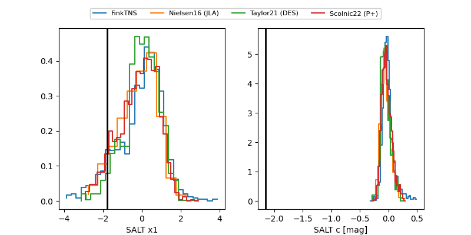

FINK: ZTF25aboyoue
Lasair: ZTF25aboyoue
ALeRCE: ZTF25aboyoue
ZTF25aboyoue (ztf,fink)
equatorial (ra, dec) = (27.2466,+54.16587)
galactic (l, b) = (131.3741,-7.75989)

last atlaso=17.51, ztfg=16.03, ztfr=18.51
1 atlaso, 1 ztfg, 1 ztfr detections